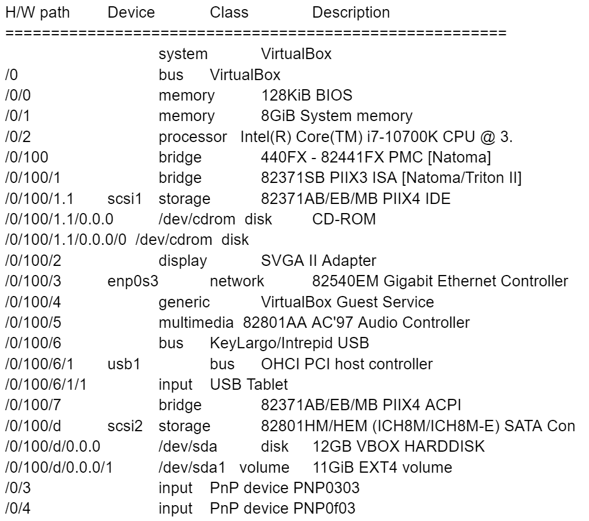

Päivämäärä: 22.1.2022
Opiskelija: Erik Ramm-Schmidt
Kokeilin lshw komentoa Debian virtuaalikoneen komentotulkissa. Se ei onnistunut, komentotulkki ei tunnustanut komentoa. Googlasin ongelman ja asensin lshw (sudo apt-get install lswh).
Tämän jälkeen yritin uudestaan, kirjoitin komentotulkkiin sudo lshw -short -sanitize. Se onnistui, ja sain seuraavan tulosteen
Minulla oli todella vaikea ymmärtää tulosteen tekstiä. Googlasin jokaisen rivin avainsanat, mutta aika paljon jäi vielä epäselväksi. Alla on käyn läpi tulosteen rivi riviltä:
| Rivi | Yritys ymmärtää tulostusriviä |
|---|---|
| /0/ memory 128KiB BIOS | En ole varma, ehkä virtuaalikoneen BIOS:in muisti. |
| /0/ memory 8GiB System memory | Virtualikoneella on 8GB muistia |
| /0/ processor Intel(R) Core(TM) i7-10700K CPU @ 3. | Virtuaalikone on tunnistanut prosessorin oikein. Koneessa on intelin i7 prosessori. |
| /0/100 bridge 440FX - 82441FX PMC [Natoma] | Tämä on viittaus Intelin piirisarjaan |
| /0/100/1 bridge 82371SB PIIX3 ISA [Natoma/Triton II] | Tämä on viittaus Intelin piirisarjaan |
| /0/100/1.1 scsi1 storage 82371AB/EB/MB PIIX4 IDE | Myös tämä on viittaus Intelin teknologioihin. |
| /0/100/1.1/0.0.0 /dev/cdrom disk CD-ROM | En ole varma, mahdollisesti viittaus virtuaaliseen CD-ROM asemaan. |
| /0/100/1.1/0.0.0/0 /dev/cdrom disk | En ole varma, mahdollisesti viittaus virtuaaliseen CD-ROM asemaan. |
| /0/100/2 display SVGA II Adapter | Mahdollisesti virtuaalinen näytönohjain |
| /0/100/3 enp0s3 network 82540EM Gigabit Ethernet Controller | Mahdollisesti internetyhteys |
| /0/100/4 generic VirtualBox Guest Service | Mahdollisesti Virtualboxin virtuaalinen CD-ROM jossa on ajureita |
| /0/100/5 multimedia 82801AA AC'97 Audio Controller | Intelin äänentoistoteknologia |
| /0/100/6 bus KeyLargo/Intrepid USB | Ei tietoa, liittyy tod. USB-teknologioihin |
| /0/100/6/1 usb1 bus OHCI PCI host controller | Ei tietoa, liittyy tod. USB-teknologioihin |
| /0/100/6 bus KeyLargo/Intrepid USB | Ei tietoa, liittyy tod. USB-teknologioihin |
| /0/100/6/1 usb1 bus OHCI PCI host controller | Ei tietoa, liittyy tod. USB-teknologioihin |
| /0/100/6/1/1 input USB Tablet | Ei tietoa, liittyy tod. USB-teknologioihin |
| 0/100/7 bridge 82371AB/EB/MB PIIX4 ACPI | Myös tämä on viittaus Intelin teknologioihin. |
| /0/100/d scsi2 storage 82801HM/HEM (ICH8M/ICH8M-E) SATA Con | Myös tämä on viittaus Intelin teknologioihin. |
| /0/100/d/0.0.0 /dev/sda disk 12GB VBOX HARDDISK | Virtuaalikoneella on 12GB:n kovalevy |
| /0/100/d/0.0.0/1 /dev/sda1 volume 11GiB EXT4 volume | Uskon että virtuaalikoneen näkökulmasta sillä on 11GB talletustilaa. |
| /0/3 input PnP device PNP0303 | PnP viittaa "Plug-and-Play" laitteeseen. Mahdollisesti hiiri tai näppäimistö. |
| /0/4 input PnP device PNP0f03 | PnP viittaa "Plug-and-Play" laitteeseen. Mahdollisesti hiiri tai näppäimistö. |